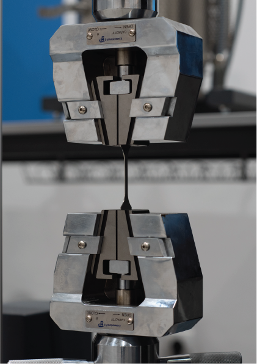
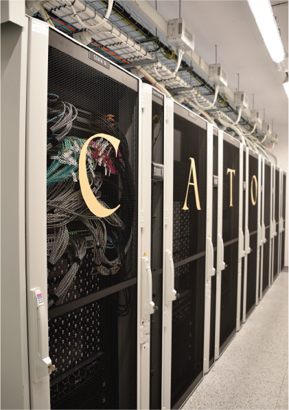
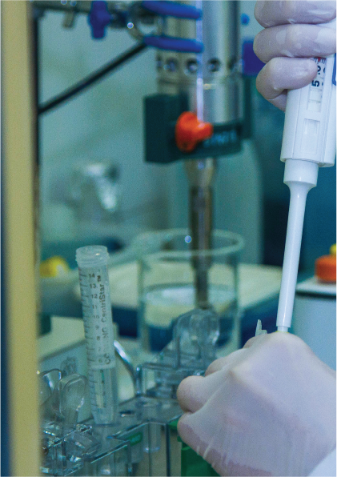

Cztery klastry, trzynaście usług
Każda usługa prowadzi do konkretnej aparatury i do osoby, która za nią odpowiada.
-
01
Inżynieria Materiałowa i Wytwarzanie
Projektowanie materiałów, zaawansowane procesy metalurgiczne oraz technologie druku 3D metali, tworzyw i ceramiki.
Cały klaster- Projektowanie Materiałów5 aparatów
- Wytwarzanie Stopów Metali5 aparatów
- Wytwarzanie Przyrostowe Metali (Druk 3D)4 aparaty
- Wytwarzanie Przyrostowe Tworzyw Sztucznych i Ceramiki4 aparaty
- Preparatyka Metalograficzna4 aparaty

-
02
Analiza i Badania Materiałowe
Zaawansowana charakteryzacja materiałowa, mikrostruktura, tomografia, badania mechaniczne oraz teledetekcja dronami.
Cały klaster- Analiza Struktury i Składu Fazowego4 aparaty
- Badania Właściwości Mechanicznych3 aparaty
- Akwizycja Danych Dronami5 aparatów

-
03
Technologie Cyfrowe i VR
Obliczenia wysokiej wydajności (HPC), digitalizacja 3D, wirtualna rzeczywistość oraz informatyka śledcza.
Cały klaster- Zasoby Obliczeniowe (Klaster CATO)3 aparaty
- Skanowanie 3D, Digitalizacja i VR4 aparaty
- Informatyka Śledcza5 aparatów

-
04
Środowisko i Społeczeństwo
Analizy chemiczno-biologiczne próbek środowiskowych oraz badania komunikacji medialnej i UX.
Cały klaster
Razem 56 pozycji aparatury w czterech klastrach.Przeglądaj katalog aparatury